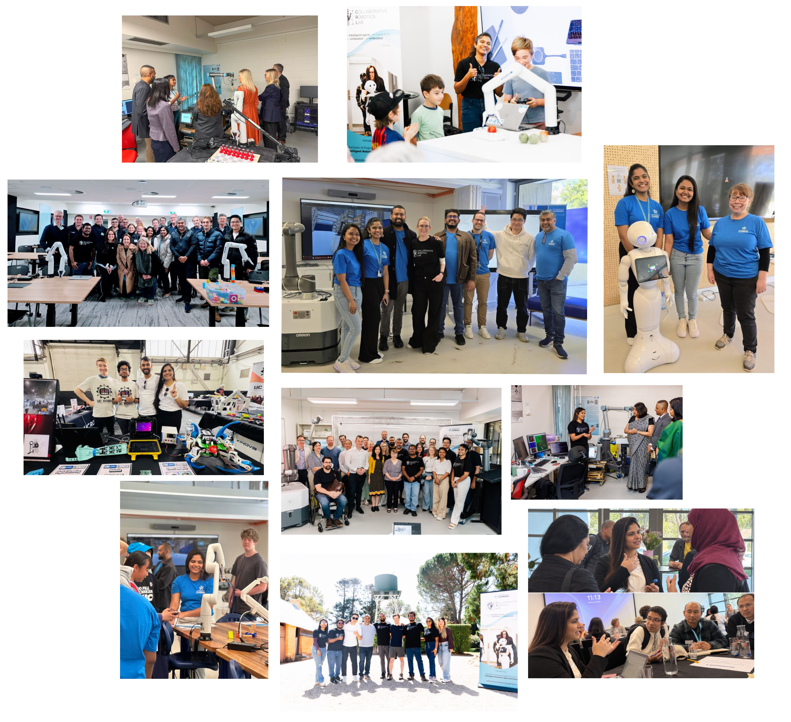

My experience includes academic teaching, mechatronics engineering, robotics outreach, community engagement, and invited presentations.
Professional Experience
Casual Academic - Tutor
Faculty of Science and Technology
University of Canberra, ACT, Australia
Jul. 2024 – Present
Delivering tutorial sessions for
undergraduate students in the
Technology Innovation and
Entrepreneurship module.
Teaching Assistant
General Sir John Kotelawala
Defence University
Ratmalana, Sri Lanka
Mar. 2022 – Jul. 2023
Conducting tutorial sessions for
undergraduates in Mechatronics Engineering.
Conducting laboratory experimental sessions
for undergraduates in the Mechanics and
Control Laboratory.
Assisting lecturers in grading laboratory
reports, assignments, and tutorials.
Assisted courses including:
ME2132 – Dynamics of Mechanical Systems,
MC2212 – Sensors and Actuators,
ME2213 – Control System Engineering,
ME2233 – Mechanics of Machines,
MC3203 – Principles of Automation,
and ME3113 – Advanced Control Systems.
Roles Undertaken
Coordinator – Year 1 Mechatronic
Engineering Degree Programme.
Member of Board 2: Research Cell /
IRC / Journal / FICB Faculty-level committee.
Coordinator for LMS and Department Website –
Department of Mechanical Engineering.
Automation Engineer (Internship)
MAS Intimates (Pvt.) Ltd.
Ratmalana, Sri Lanka
Jul. 2021 – Feb. 2022
Gained practical experience in
mechatronic system design,
solid modelling, circuit design,
and manufacturing processes.
Projects
Designed a retracting mechanism for
an industrial sewing machine used
for elastic waistband attaching.
Designed and developed a control box
for a fabric molding machine.
Designed a pick-and-place card
stacking mechanism.
Volunteering & Community Engagement

2026
Sri Lanka Festival 2026 – Sri Lanka High Commission, Canberra | Represented the Collaborative Robotics Lab (CRL) and supported robotics outreach and community engagement activities.
Canberra Brick Show 2026 – Canberra | Participated in interactive robotics demonstrations and hands-on STEM engagement activities for children and the public.
HDR Student Symposium 2026 – University of Canberra | Served as a roundtable facilitator for “International HDR Experiences: Lived International Experiences,” supporting discussions among HDR students.
Visit of the Sri Lankan High Commissioner – University of Canberra | Participated in the CRL research showcase, sharing insights into ongoing robotics research with the visiting delegation.
UC Open Day 2026 – Faculty of Science and Technology, University of Canberra | Supported interactive robotics demonstrations and engagement activities for prospective students, families, and visitors.
2025
Collaborative Robotics Lab (CRL) Launch – University of Canberra | Supported the lab launch and research engagement activities with academic and industry guests.
UC Open Day 2025 – University of Canberra | Participated in robotics outreach activities, engaging with prospective students and visitors.
AgriFutures Australia Stakeholder Summit Visit – Collaborative Robotics Lab, University of Canberra | Supported the organisation and hosting of the AgriFutures Australia delegation and research engagement activities.
ACT Political Representatives' Visit – Collaborative Robotics Lab, University of Canberra | Participated in the robotics research showcase and engagement activities with visiting political representatives.
Harvest Day Out 2025 – Lanyon Homestead, Canberra | Conducted interactive apple-picking demonstrations using a Kinova robotic arm and Xbox controller, engaging children and families in hands-on robotics activities.
Invited Talks & Presentations
2026
IEEE Global Soft Robotics Day 2026 – Australian Hub – CSIRO QCAT, Pullenvale, Brisbane | Presented PhD research on robotic grasping for automated food waste sorting, sharing the research journey from conventional robotic grasping to soft and multimodal 6D grasping approaches.
Biotechnology: Food, Fibre, Future Student Conference 2026 – Academy of Future Skills, ACT Education Directorate | Delivered a public talk to school students on robotics, innovation, and solving real-world problems, supported by interactive robotics demonstrations.